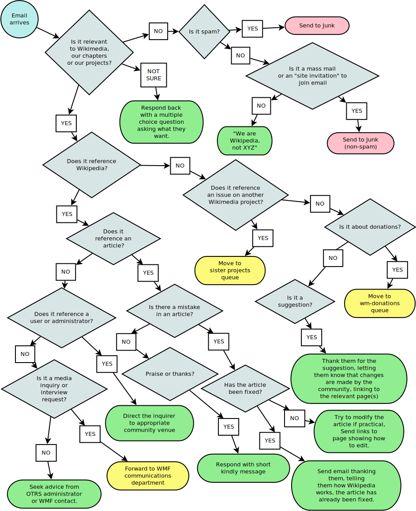

<div align="center" style="padding-top: 2rem;"> <h1>Ten Quick Software Design Tips<br/>for Data Scientists</h1> <p><img src="./codebender-logo.svg" alt="Third Bit logo" width="20%" /></p> <h2>Greg Wilson</h2> <p><a href="http://third-bit.com/talks/sd4ds/">http://third-bit.com/talks/sd4ds/</a></p> </div> --- <div class="split-title split-first"> <h2>You</h2> </div> - Spend your time squeezing insights out of data - Mostly taught yourself how to program - Are struggling to design bigger things <div align="center"> <p> <a href="https://xkcd.com/2347/"><img src="./dependency.png" alt="XKCD Dependency cartoon" width="40%" /></a> </p> </div> --- <div class="split-title split-first"> <h2>Me</h2> </div> - Don't remember much statistics… - …but I've built a lot of complicated software… - …and I've been lucky enough to hang out with some very smart people <div align="center"> <p> <img src="./beautiful-code.png" alt="Beautiful Code cover" /> <img src="./aosa1.png" alt="AOSA vol 1 cover" /> <img src="./aosa2.png" alt="AOSA vol 2 cover" /> </p> </div> --- <div class="split-title split-first"> <h2>The Most Important Thing</h2> </div> <div align="center"> <h3> Computer scientists<br/>aren't taught how to design software </h3> </div> - The most design-intensive "engineering" discipline there is - But courses where students analyze and critique others' programs are rare - So no, you haven't missed something obvious --- <div class="split-title split-first"> <p>Design…</p> <h2>…for people's cognitive capacity</h2> </div> - Short-term memory vs. long-term memory - You can manage 7±2 things at a time (<a href="#Miller1956">Miller1956</a>) - So design software to keep *cognitive load* manageable - Constants are easier to remember than varying values… - …unless those values vary in predictable ways - Keep number of parameters or variables in (mental) scope at any time below this threshold - Pipes with strict left-to-right reading order are easier to understand than nested function calls --- <div class="split-title"> <p>Design…</p> <h2>…for people's cognitive capacity</h2> </div> - Brains use *chunks* to expand effective size of short-term memory - So combine things into structures <hr/> ``` def enclose(x0, y0, z0, x0, y0, z0, nearness): … ``` <hr/> ``` def enclose(p0, p1, nearness): … ``` --- <div class="split-title"> <p>Design…</p> <h2>…for people's cognitive capacity</h2> </div> - Functions should be short, shallow, and single-purpose - Of course, no one would argue the opposite… - If I read a function aloud, are all the steps at the same conceptual level? ``` def main(): config = buildConfig(sys.argv) state = initState(config) while (config.currentTime < config.haltTime): updateState(config, state) report(config, state) ``` --- class: sidebar ## Sidebar - Fancy code metrics don't tell us more about effort required or fault rates than lines of code (<a href="#ElEmam2001">ElEmam2001</a>) --- <div class="split-title split-first"> <p>Design…</p> <h2>…toward widely-used abstractions</h2> </div> - Experts have *design patterns* in mind when building code - Learning them makes you a better programmer (<a href="#Tichy2010">Tichy2010</a>) - But also makes your code seem more familiar to others - Examples include: - "Most valuable" variable (<a href="#Byckling2005">Byckling2005</a>) - Nested `for` loops over 2D array - Filter-group-summarize --- <div class="split-title"> <p>Design…</p> <h2>…toward widely-used abstractions</h2> </div> - A near miss is worse than no pattern at all ``` for (i=0; i<a.width; i++) { for (j=0; i<a.height; j++) { a[i][j] = cos(abs(a[i][j]) - lemaitre(b_norm, a[j][i])) } } ``` - The eye (literally) doesn't see it - Maximize "what's unique to this operation / boilerplate" ``` a = cos(abs(a) - lemaitre(b_norm, a.transpose())) ``` --- <div class="split-title"> <p>Design…</p> <h2>…toward widely-used abstractions</h2> </div> - Balance of abstraction and comprehension depends on how much people know <div class="flex-row"> <div class="flex-col"><img src="./comprehension-01.svg" alt="Novice comprehension" width="90%" /></div> <div class="flex-col"><img src="./comprehension-02.svg" alt="Expert comprehension" width="90%" /></div> </div> --- class: sidebar <h2>Sidebar</h2> - Some people say that if you need to comment your code you should have written clearer code - That is *expert blind spot* at work - Newcomers need help building a *mental model* of the code and problem --- <div class="split-title split-first"> <p>Design…</p> <h2>…for evolution</h2> </div> - Software changes over time because the problem changes *and* because we learn more - The tool shapes the hand - A good design makes independent evolution of parts easier - A fix *here* shouldn't require changes *there* - Realistically, should only require a small number of changes in limited, predictable places --- <div class="split-title"> <p>Design…</p> <h2>…for evolution</h2> </div> - Key ideas are *information hiding* and *loose coupling* - Which manifest as *interface vs. implementation* - Many of the more advanced features of programming languages exist to check this - Examples - Deriving classes - Polymorphic functions - Explicit interfaces or traits --- <div class="split-title"> <p>Design…</p> <h2>…for evolution</h2> </div> - Liskov Substitution Principle (<a href="#Liskov1994">Liskov1994</a>): it should always be possible to replace the general thing with a specific thing without breaking - Design by contract (<a href="#Meyer1994">Meyer1994</a>) extends this idea through time - *Pre-conditions* can be weakened (take input the earlier implementation wouldn't) - *Post-conditions* can be strengthened (produce a subset of the earlier implementation's output) - Can be used to define and verify tests --- class: sidebar <h2>Sidebar</h2> - <a href="#Schon1984">Schon1984</a> and others have found that experts jump between levels looking for concrete refutations of plans as soon as possible - Depth-first design is therefore a good strategy *if* you write the hard parts first - Which most of us avoid --- <div class="split-title split-first"> <p>Design…</p> <h2>…for testability</h2> </div> - We're afraid to modify *legacy code* because things will break unexpectedly (<a href="#Feathers2004">Feathers2004</a>) - Comprehensive tests make us less afraid - But we need testable pieces in order to create tests economically - Brings us back to pre-and-post rather than how --- <div class="split-title"> <p>Design…</p> <h2>…for testability</h2> </div> - You can tell how you're doing by asking: - How easy is it to create a *fixture*? - How easy is it to invoke just the behavior we want? - How easy is it to check the result? - How easy is it to figure out what "right" is? --- <div class="split-title"> <p>Design…</p> <h2>…for testability</h2> </div> - *Refactoring* is the process of reorganizing or rewriting code without changing behavior - By which we mean "high-level behavior" because of course if you look closely enough... - <a href="#Fowler2018">Fowler2018</a> describes common refactoring moves for code - These do to code what tidying steps in a data pipeline do to data (<a href="#Wickham2017">Wickham2017</a>): move it toward well-understood forms (<a href="#Kerievsky2004">Kerievsky2004</a>) --- <div class="split-title split-first"> <p>Design…</p> <h2>…as if code was data</h2> </div> - The insight on which modern computing is based - Programs are just text files - Style-checking tools - Specially-formatted comments as embedded documentation --- <div class="split-title"> <p>Design…</p> <h2>…as if code was data</h2> </div> - But what's *really* cool is that code in memory is just another data structure - Functions as arguments - Functions in data structures - Dynamic loading - Interface vs. implementation - Lazy evaluation in R - Decorators in Python --- <div class="split-title"> <p>Design…</p> <h2>…as if code was data</h2> </div> - But see the discussion earlier of comprehension curves - What is powerful in the hands of experts is spooky action-at-a-distance for novices --- <div class="split-title split-first"> <p>Design…</p> <h2>…for delivery</h2> </div> - Development operations (DevOps) has become a buzzword - Like "data science" or "computational thinking", the term is popular because people can use it to mean whatever they want - But the core idea is a good one (<a href="#Kim2016">Kim2016</a>,<a href="#Forsgren2018">Forsgren2018</a>) - The code you ship is surrounded and supported by software (and practices) that deliver that code - Investment in automation pays off many times over - *If* you design things so that they can be automated --- <div class="split-title"> <p>Design…</p> <h2>…for delivery</h2> </div> - Use whatever *build tool* your language expects - `pip` or `conda` for Python - `devtools` for R - Many conflicting options for JavaScript - Organize code and files the way your build system expects --- <div class="split-title"> <p>Design…</p> <h2>…for delivery</h2> </div> - Handle errors - Don't just catch and discard (<a href="#Nakshatri2016">Nakshatri2016</a>) - Integrate logging - Reporting that can be dialed up or down is really helpful in production… - …particularly if messages from many components are collated… - …*if* the messages are helpful - Design *components* - "I'm not ashamed of anything—I just don't want to share anything with you" - Services with APIs --- class: sidebar <h2>Sidebar</h2> - 2005–2025: trying to get information back out of PDFs - 2025—???: trying to get information back out of Docker images --- <div class="split-title split-first"> <p>Design…</p> <h2>…graphically</h2> </div> - Flowcharts are unfairly maligned (<a href="#Scanlan1989">Scanlan1989</a>) <div align="center">  </div> --- <div class="split-title"> <p>Design…</p> <h2>…graphically</h2> </div> - Very few programmers use UML the "right" way (<a href="#Petre2013">Petre2013</a>) - But almost all draw pictures to help them design (<a href="#Cherubini2007">Cherubini2007</a>) - Blueprints versus brainstorming --- <div class="split-title"> <p>Design…</p> <h2>…graphically</h2> </div> - Architecture diagrams: probably the most widely used (probably because of their informality) <div align="center"> <img src="architecture-diagram.png" alt="Architecture diagram" width="60%" /> </div> --- <div class="split-title"> <p>Design…</p> <h2>…graphically</h2> </div> - Entity-relationship diagrams: widely used because they are actually helpful <div align="center"> <img src="er-diagram.png" alt="Entity-relationship diagram" width="80%" /> </div> --- <div class="split-title"> <p>Design…</p> <h2>…graphically</h2> </div> - Use case maps: actions overlaid on architecture <div align="center"> <img src="use-case-map.png" alt="Use case map" width="70%" /> </div> --- <div class="split-title split-first"> <p>Design…</p> <h2>…after the fact</h2> </div> - The most important thing is to *look* as though you designed things (<a href="#Parnas1986">Parnas1986</a>) - So that the next person can understand it - Many designers explain architecture by recapitulating history (<a href="#Brown2011">Brown2011</a>,<a href="#Brown2012">Brown2012</a>) - Challenge and response - Can only understand why it does what it does by understanding the problem it was designed to solve --- <div class="split-title"> <p>Design…</p> <h2>…after the fact</h2> </div> - Good messages in assertions serve as documentation - Not just "pivot index must be greater than 1" but "pivot index must be greater than 1 because the algorithm needs at least two elements below the pivot" - People never write this - And that's often the correct decision - Predictions about what detail will be needed are usually wrong - Keeping that narrative up to date is expensive --- <div class="split-title split-first"> <p>Design…</p> <h2>…with villains in mind</h2> </div> - Privacy, security, and fairness cannot be sprinkled on after the fact - *Principle of Least Privilege*: what is the least information this part of the software absolutely needs to do its job? - Work with partial (obfuscated) personal information - Work with reduced permissions - E.g., PostgreSQL allows select-only access to tables - Test with database of synthetic information so that you can check for bias --- <div class="split-title split-first"> <p>Design…</p> <h2>…collaboratively and inclusively</h2> </div> - Diversity improves outcomes in fields from business to healthcare (<a href="#Gompers2018">Gompers2018</a>,<a href="#Gomez2019">Gomez2019</a>) - Bouncing ideas off each other reveals flaws - But you should do it because *it's the right thing to do* --- class: sidebar <h2>Sidebar</h2> - A vocal minority in tech claim that "diversity of thought" is equivalent to diversity of race, gender, or wealth - They are hypocrites, cowards, or trying so hard to be clever that they've tied their own shoes together --- <div class="split-title"> <p>Design…</p> <h2>…collaboratively and inclusively</h2> </div> - Licensing is a design issue - You cannot use components whose licenses are incompatible with yours - A Code of Conduct people they are invited to take part in the conversation - Modular designs makes it easier for newcomers to contribute (<a href="#Sholler2019">Sholler2019</a>) --- ## Conclusion FIXME